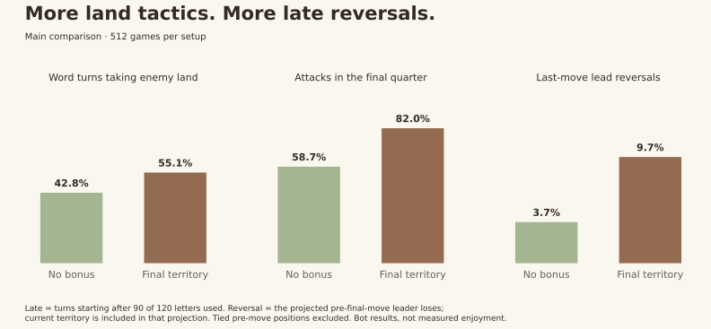

Words + defended castles
Your smaller length bonus and five letter-value tiers. Side castles earn 2, centre earns 4, after surviving an opponent’s turn.
No points for ordinary territory.
English scoring follow-up · 18 October 2026
Your idea is worth pursuing. A final +1 per owned tile makes ordinary land matter, while words still earn most of the points. The cost: a sharper endgame.
Automated play, not human playtests. Live scoring is unchanged.
The comparison
Your smaller length bonus and five letter-value tiers. Side castles earn 2, centre earns 4, after surviving an opponent’s turn.
No points for ordinary territory.
At the end, every tile you own adds 1. Starting tiles, castles and jokers count equally. Neutral tiles give nothing.
One tally, once the game finishes.
Both start at zero. No capture rewards, special final castle values or midgame deductions. Existing English board, letters and game length retained.
01 / Where the points come from
Both players’ final scores combined, equal weight per game. Across the alternative models, final territory supplies 13.7–15.7%. Only about 44.5 of 69 tiles end owned in the main comparison.
Mean points and mean per-game percentages differ slightly from dividing the averages. Rounding can leave totals 0.1% short.
02 / What changes
Attacks become more common, especially near the finish. Late moves that give up at least two word points for more land or castle opportunity rise from 13.8% to 29.7%. Average word length barely changes.

| Main model | No bonus | Final territory |
|---|---|---|
| Word turns taking enemy land | 42.8% | 55.1% |
| Attacks in the final quarter | 58.7% | 82.0% |
| Late spatial sacrifices | 13.8% | 29.7% |
| Average word length | 5.0 | 5.1 |
| Castle ownership changes / game | 5.5 | 5.7 |
| Halfway leader eventually wins | 75.5% | 70.9% |
| Last-move lead reversal | 3.7% | 9.7% |
| Starting player win share | 55.4% | 52.1% |
Late: turns starting after 90/120 letters spent. Halfway: banked leader after 60 letters. Last-move reversal: projected leader before the last move loses, including current ownership in that projection; tied positions excluded. Starter wins count draws as half.
The final tally changes the winner or draw in 9.0% of the bonus games if you remove it from the same played moves. That is an accounting comparison; players would make different choices under different rules.
03 / A real final-move choice
In this test position, TITAN gives up four word points versus DISH. It leaves you three more tiles and your opponent four fewer. That seven-point ownership swing makes your winning margin three points better.
| At the finish | TITAN | DISH |
|---|---|---|
| Word points | 4 | 8 |
| Your final territory | 28 | 25 |
| Opponent final territory | 21 | 25 |
| Final score (you : opponent) | 178 : 153 | 179 : 157 |
| Winning margin | 25 | 22 |
Seed 30006, alternate starter, player 1. Both moves end the game; both still win. Word scores reflect the actual jokers used. One illustrative example from sixteen saved final-move comparisons, not a success-rate claim. Inspect every saved example.
04 / My verdict
It gives ordinary land a purpose without a capture-history rule or scores falling during play. About 59% words, 25% defended castles and 16% final territory is a promising balance for your goal. Keep the bonus at one point for now.
Stealing an enemy tile changes the eventual gap by two: one for you, one they will no longer receive. No banked points are deducted, but final grabs matter.
Holding ordinary land early earns no direct payment. Castles remain the reward for holding over time. Expect more final-quarter attacks, not equally strong territory incentives all game.
Starter wins fall from 55.4% to 52.1% in the main model, but the paired uncertainty includes no change. Reply-aware play still gives the starter 60.9%. This is not a proven fix.
More attacks are not proof of deeper strategy. Against a word-first opponent, the balanced bot wins 70.3% without territory and 69.1% with it. Defended castles already reward attention to the map.
| Balanced bot against… | No bonus | Final territory |
|---|---|---|
| Words first | 70.3% | 69.1% |
| Castles first | 40.6% | 43.4% |
| Score per letter | 65.6% | 65.6% |
128 games per setup and matchup. Draws count half. Fixed heuristics, not optimal players.
Show a small separate tally of prospective territory points, then count them into the total at the finish. Human-test whether last-turn theft feels exciting or arbitrary. This report does not change the app.
05 / Inspect the games
Four full replays from the first main-study seed, with both starting orders. The highlighted path shows the letters used; other tiles show the resulting board. Gold borders mark castles.
06 / How much to trust this
2,880 distinct games and 70,888 turns. Identical seed pairs and both starting orders. Nine rule tests and an exact audit of all 1,024 main games pass. There were 3,008 executions; 128 deliberately repeated controls are excluded from the headline.
The main bots notice twelve sampled familiar words, with checks for fewer words, exhaustive familiar-word search, one-reply planning and different estimates of whether land will survive. They use the real engine and legal dictionary, but are heuristics—not human players or optimal strategists.
Paired 95% intervals: attack increase +10.9 to +13.6 percentage points; starter win change −8.4 to +1.4 points. These describe sampled boards within this model, not human enjoyment. Coefficients were fixed before outcomes. No multiple-testing correction.
No player data used. No new ongoing cost. Report logic and exported charts checked; physical-phone rendering was unavailable.